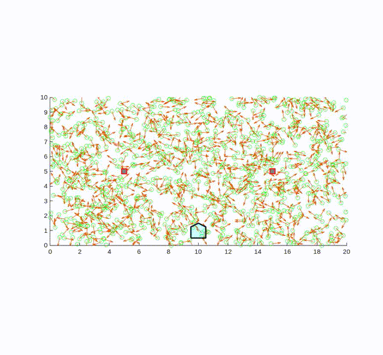
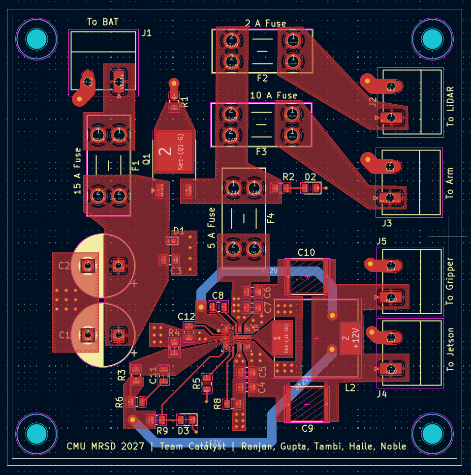

This is a gallery of the robotics work I've done. I'm working on
populating it further.
A ultraviolet fungicidal system I worked on at Tortuga AgTech in
2022.

Demonstration of a two-landmark particle filter for robot
localization. The green square is the actual robot, the blue one is
the PF's estimate. Particle filters are a statistical method of
keeping track of a robot's state, and is thus tolerant to nonlinear
and really noisy systems. At a high level, you make a bunch of
guesses (particles) as to the state of the system, push those
guesses through the system's modelled dynamics (plus noise), check
the results against a measurement, and resample only the resulting
particles that agree with the measurement up to a certain threshold,
and repeat. You can see in this example there is vertical error, and
that is because the two landmarks are horizontal, meaning incoming
measurements don't have the dimensionality to usefully cull out
particles that are incorrect vertically. This is why triangulation
requires a minimum of 3 points.
A safety fixture for ultraviolet lightbulbs that I built at Tortuga
AgTech (UVC light causes sunburn and eye damage). It uses a
limitswitch to cut power if the PVC cover is removed. Interestingly
I also had to add ventilation to this fixture because the lights
heat up the PVC too much.

A power distribution PCB I designed and fabricated for a mobile
manipulator robot. It takes in 24 V from two car batteries, routes
it to a robot arm and LiDAR, and regulates it down for a Jetson Orin
and dynamixel gripper. It also includes protection circuitry like a
reverse-polarity MOSFET, bulk capacitors, and blade fuses.